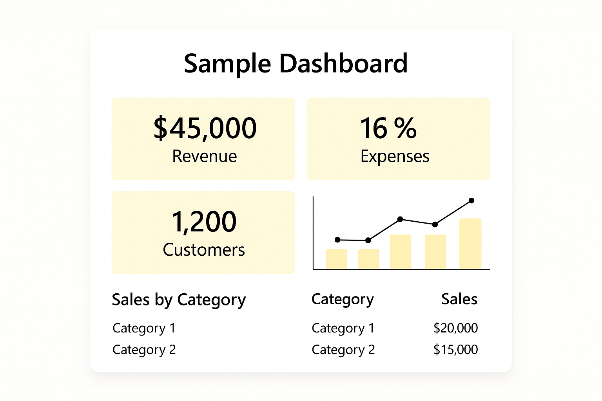

Stop wrestling spreadsheets. I turn your existing systems into clear, recurring reports so you can make decisions faster—without hiring a full data team.
Powerful SQL commands and parameterized logic tailored to your ERP or business data for accurate reporting.
From simple tables to executive KPI dashboards — interactive visuals built for clarity and impact.
Set it and forget it — automate report refreshes and email delivery to keep your team updated daily or weekly.
Here’s a preview of the kinds of dashboards and reports I build.
Example: Power BI sales dashboard with automated SQL backend.
$300 – One Power BI or Crystal report setup with light automation options.
$800 – Full dashboard package (3–4 visuals, filters, and automated data refresh).